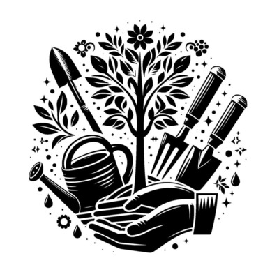
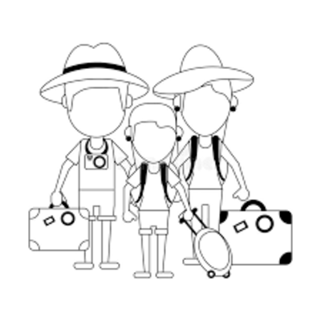
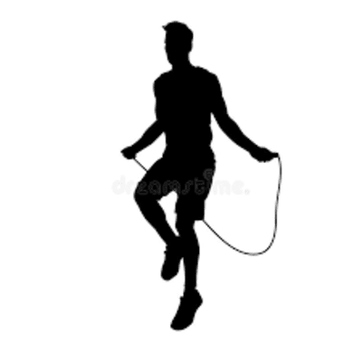
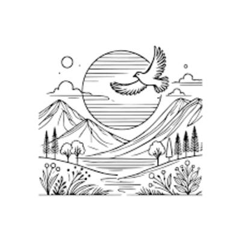
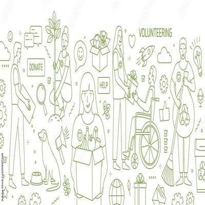
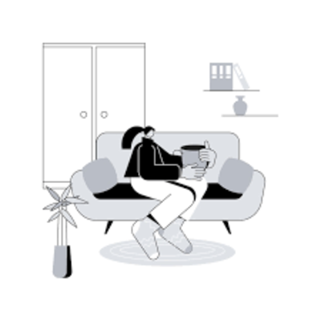
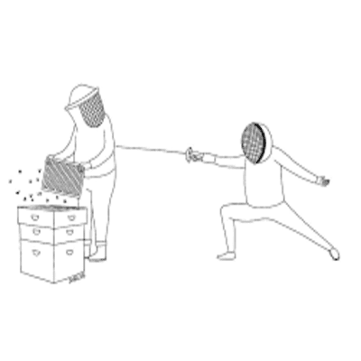
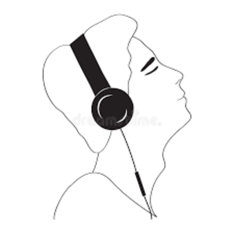

With a little over a year of coding under my belt,
I'm driven by high standards and a love for getting things just right.
I'm still learning every day, but my goal is clear:
to become a developer who builds clean, purposeful code and meaningful user experiences.
You're welcome 😐
Things I love to do
Learning and life-long learning Coding { when i know what i'm doing 😁 } Reading Writing

Gardening

Tourism

Cardio

Nature Mind and Spirituality

Volunteering Sudoku

Simple living

Dry humour

Poetic, meaningful, inspirational & reflective music